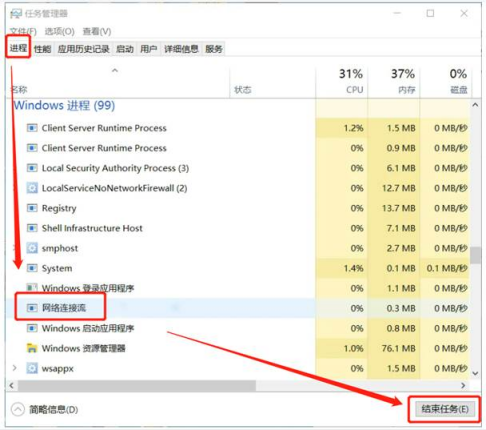

Win10、Win11，跳过联网使用本地账户的3种方法
Created at: 2025年7月26日 11:08
Tags: 网络技术
随着win11 22H2的更新，方法1只适用于之前的版本，22H2 请参考方法2、3
操作步骤
1、 联网界面，打开FN Lock，shift+F10，打开命令提示符，输入：taskmgr 任务管理器
进程里，结束【网络连接流】
详细信息里，结束【oobenetworkconnectionfow.exe】


2、 联网界面，打开FN Lock，shift+F10，打开命令提示符，输入：oobe\ByPassNro
系统会重启，再次到联网界面时，下一步旁边会有：我没有Internet连接，跳过即可


3、 如果已经联网了，或无法使用上述方法跳过，可以使用【no@thankyou.com】此微软账户
密码可以任意填写，系统会提示出错，下一步即可使用本地账户登录